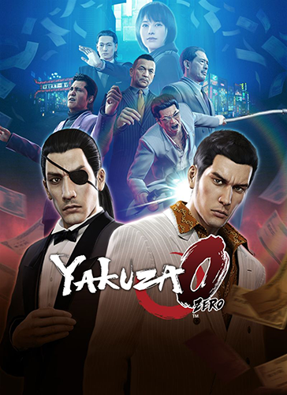

yakuza 0

Persona 3 reload

Resident Evil 4 remake
.png)
Minha Vida Acadêmica:
Minha vida acadêmica foi tranquila, graças a Deus.
deis de sempre estudei no colegío são josé
sendo um dos alunos que ficou mais tempo na instituição estudando lá por mais de 10 anos
E atualmente, estou em meu primeiro semestre na Universidade Vila Velha - UVV (Cursando em 2024).
o principla desafio esta sendo principalmente a ansiedade e meu foco,
pois tenho tdah que faz com que eu fique viajando quando não tenho o interesse kkk
Participação de Eventos:
participei da Inovaweek de 2024 na Universidade Vila Velha - UVV,
avaliei projetos de diversos alunos, todos com muita dedicação e qualidade.
Minhas Matérias:
Breve resumo sobre minhas matérias durante o curso superior
| MATÉRIAS | DECRIÇÃO |
|---|---|
| Construção de Software para Web | Aprendo sobre o complexo desenvolvimento de sites e sistemas online. |
| Design e Desenvolvimento de Banco de Dados I | A primeira parte onde aprendo criação, organização e gerenciamento de bancos de dados. |
| Experiência e Interface com o Usuário | Aprendo a criar e otimizar formas para os usuários interagir com site e sistema, com design intuitivo, facilidade e satisfação. |
| Fundamentos de Tecnologia da Computação | Aprendo conceitos desde os mais básicos sobre funcionamento da computação e operação de sistemas, como algoritmos e softwares. |
| Lógica para Computação | Aprendo a pensar de forma estruturada, usando regras e padrões para resolver problemas em programação. |
| Textos Científicos: Aspectos Metodológicos e Linguísticos | Aprendo sobre escrita e análise de textos acadêmicos, focando em métodos científicos e linguagem formal. |
Trabalhos e Planos Futuros
"bença adm fabrício..."
Sinceramente não sei se irei me dar bem nessa área.
como eu disse mais acima não era o meu sonho de careira,
mais espero conseguir me dar bem nessa área e conseguir achar minha paixão
mas me sinto extremamente confortável,
pois sempre adorei computação só nunca decidi me aprofundar.
enfim espero que tudo de certo e um dia eu possa realizar o meu maior sonho.
Que e ser pai, não me importo com o sexo do meu filho/filha apenas quero o amar bastante.
além de dar a ele/ela uma vida digna e que ele sempre saiba que o pai dele/dela sempre ira amar ele/ela
Espero que tenha gostado de saber mais de mim e que a força esteja com você. Adeus.
LANDING PAGE
CURRÍCULO ➚
GITHUB ➚